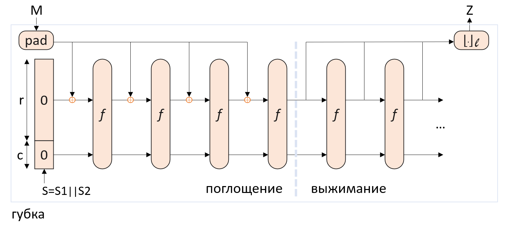

Алгоритм хеширования:
Keccak использует конструкцию "sponge" (“губка”) для хеширования данных, то есть сначала входные данные “поглощаются” в губку, а после различных преобразований результат “выжимается” из губки. Функция принимает входное сообщение произвольной длины и обрабатывает его по блокам. Размер блока зависит от выбранной версии алгоритма и может быть 224,256,384 и 512 бит, на выходе получается 32-байтовый хэш.
Рассмотрим случай SHA-256. Сама конструкция изображена на схеме, где:
• r = 1088 - битрейт; большее значение соответствует большей скорости;
• с = 512 - ёмкость: большее значение соответствует большей стойкости;
• b = r + c = 1600 - размер состояния, ширина;
• f - перестановка;
• pad - правило, по которому входное сообщение M дополняется до сообщения, имеющего размер, кратный r.

Таким образом, схема состоит из двух этапов:
1. Сначала к входному сообщению применяется правило pad;
2. Далее биты состояния инициализируются нулями;
3. На фазе “поглощения” каждый r-битный блок строки складывается по модулю 2 с первыми r-битами состояния sponge-конструкции, после чего выполняется перестановка f над всеми b битами состояния. Полученное состояние складывается по модулю 2 с последующим r-битным блоком, и так до тех пор, пока все блоки не “поглотятся”. В конце этой фазы будет сформировано некое состояние S;
4. На фазе “выжимания” первые r битов состояния S подаются на выход, после чего выполняется перестановка f над состоянием S. Первые r битов нового состояния подаются на выход, после чего снова выполняется перестановка f, и так до тех пор, пока не будет сформирована последовательность необходимой длины l.
Рассмотрим подробнее каждый шаг.
Сначала к входному сообщению применяется правило pad: к сообщению добавляется 1, после него — 0 или больше нулевых битов (до r-1), в конце — 1.
Причем r-1 нулевых битов может быть добавлено, когда последний блок сообщения имеет длину r-1 бит. Этот блок дополняется единицей, следующий блок будет состоять из r-1 нулей и единицы.
Два единичных бита добавляются и в том случае, если длина исходного сообщения M делится на r. В этом случае к сообщению добавляется блок, начинающийся и оканчивающийся единицами, между которыми r-2 нулевых битов. Это необходимо для того, чтобы для сообщения, оканчивающегося последовательностью битов как в функции дополнения, и для сообщения без этих битов значения хеш-функции были различны.
Затем для каждого блока Mi длиной r бит выполняется:
1. Сложение по модулю 2 с первыми r-битами набора начальных состояний S. Перед началом работы функции все элементы S будут равны нулю.
2. Далее к полученным в результате данным применяется функция f N раз. Набором начальных состояний S для блока Mi+1 будет результат последнего раунда блока Mi.
3. После того как все блоки Mi закончатся получится итоговый результат.
Функция перестановок f включает в себя исключающее «ИЛИ», побитовое «И» и побитовое отрицание и определена для строк длины-степени 2: ω = 2ˡ (в основной реализации SHA-3 ω = 64, l = 6).
Состояние S представляет собой массив A размером 5 x 5 x ω и каждый элемент массива A[i][j][k] = (5i + j) * ω + k бит строки состояния S. Функция содержит несколько шагов θ, ρ, π, χ, ι, которые выполняются несколько раундов. На каждом раунде обозначим A - входной массив, A’ - выходной.
Шаг θ
Для ∀ i, k: 0 ≤ i < 5, 0 ≤ k < ω положим:
C(i, k) = A[i][0][k] ⊕ A[i][1][k] ⊕ A[i][2][k] ⊕ A[i][3][k] ⊕ A[i][4][k]
D(i, k) = C[(i - 1) mod 5][k] ⊕ C[(i + 1) mod 5][ (k - 1) mod ω]
Для ∀ (i, j, k): 0 ≤ i < 5, 0 ≤ j < 5, 0 ≤ k < ω положим:
A’[i][j][k] = A[i][j][k] ⊕ D(i, k)
Шаг ρ
Для ∀ k: 0 ≤ k < ω: A’[0][0][k] = A[0][0][k].
Пусть в начале (i, j) = (1, 0), для t от 0 до 23:
1. Для ∀ k: 0 ≤ k < ω: A’[i][j][k] = A[i][j][(k - (t + 1)(t + 2) / 2) mod ω]
2. (i, j) = (j, (2i + 3j) mod 5)
Шаг π
Для ∀ (i, j, k): 0 ≤ i < 5, 0 ≤ j < 5, 0 ≤ k < ω:
A’[i][j][k] = A[(i + 3j) mod 5][i][k]
Шаг χ
Для ∀ (i, j, k): 0 ≤ i < 5, 0 ≤ j < 5:
A’[i][j][k] = A[i][j][k] ⊕ ( (A[(i+1) mod 5][j][k] ⊕ 1) · A[(i + 2) mod 5][j][k] )
Шаг ι
Введем дополнительную функцию rc(t), где на вход подается целое число t, а на выходе получается бит. Алгоритм функции следующий:
1. Для ∀t: t mod 255 = 0: rc(t) = 1
2. Пусть R = [10000000]
3. Для i от 1 до t mod 255:
a. R = 0 || R
b. R[0] = R[0] ⊕ R[8]
c. R[4] = R[4] ⊕ R[8]
d. R[5] = R[5] ⊕ R[8]
e. R[6] = R[6] ⊕ R[8]
f. R = Trunc₈[R]
4. Возвращается R[0]
Опишем алгоритм ι(A, iᵣ), где iᵣ - номер раунда:
1. Для ∀ (i, j, k): 0 ≤ i < 5, 0 ≤ j < 5, 0 ≤ k < ω: A’[i][j][k] = A[i][j][k]
2. Пусть RC - массив длины ω, заполненный нулями
3. Для i от 0 до l: RC[2ⁱ - 1] = rc(i + 7iᵣ)
4. Для ∀ k: 0 ≤ k < ω: A’[0][0][k] = A’[0][0][k] ⊕ RC[k]
Алгоритм перестановок:
1. Перевод строки S в массив A
2. Для iᵣ от 12 до 2l - nᵣ до 12 + 2l - 1: A’ = ι(χ(π(ρ(θ(A)))), iᵣ)
3. Перевод массива A’ в строку S’ длины b